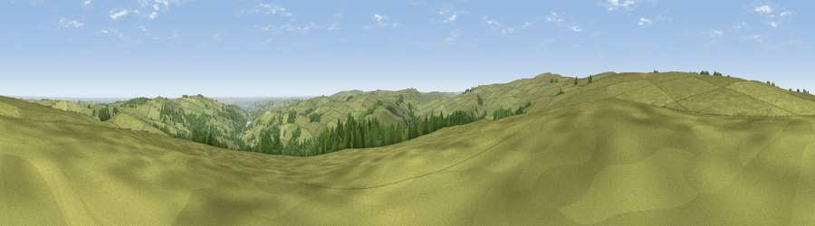

Viewpoint near Low Bradfield
#11573 in England · top 14% of its area beats it · near Low BradfieldWhere it is
The exact computed spot (SK 22925 92625). Click the marker for map links.
The view, rendered

A 360° render of this exact spot computed from the terrain model, tree cover and land cover — summer colours, afternoon light, calibrated against photographs of famous viewpoints. Real trees, hedges and buildings will differ in detail.
The panorama
Grey silhouette: terrain skyline in each direction (720 bearings, Earth curvature and refraction included). Dashed green: skyline with trees (+15 m) and buildings (+8 m) as obstacles. Blue strip: how far the ground is visible on each bearing.
Where the view opens
Wedge length = distance to the farthest visible ground on that bearing (vegetation-aware). Rings at 10, 25 and 50 km.
What fills the view
89% grassland · 8% woodland · 1% cropland ·
Angular shares of the visible panorama (visual magnitude), not map area. Landscape diversity 0.18 (0–1 Shannon).
Key numbers
More beautiful places nearby
The staircase of upgrades: each row has a higher view potential than everything closer. Driving times are estimates from straight-line distance, calibrated against real road routing — check an actual route before setting out.
| Place | Direction | Drive | Score |
|---|---|---|---|
| Viewpoint near Ewden Village | NE · 3 km | ~7 min | 62.5 |
| Back Tor | WSW · 4 km | ~8 min | 71.1 |
| West Nab | ENE · 4 km | ~9 min | 71.7 |
| Viewpoint near Thornhill | SW · 5 km | ~11 min | 74.1 |
| Viewpoint near Wharncliffe Side | ENE · 9 km | ~18 min | 75.2 |
| Wild Bank | WNW · 25 km | ~40 min | 76.2 |
| Viewpoint near Carrbrook | WNW · 25 km | ~40 min | 77.1 |
| Viewpoint near Edenfield | WNW · 48 km | ~69 min | 77.5 |
53.42992, -1.65644 · source: screening · position refined by local search. Computed location — check access rights before visiting.